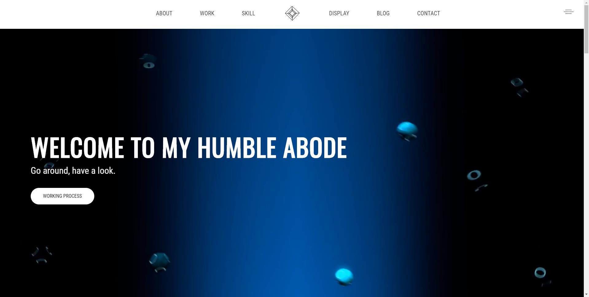
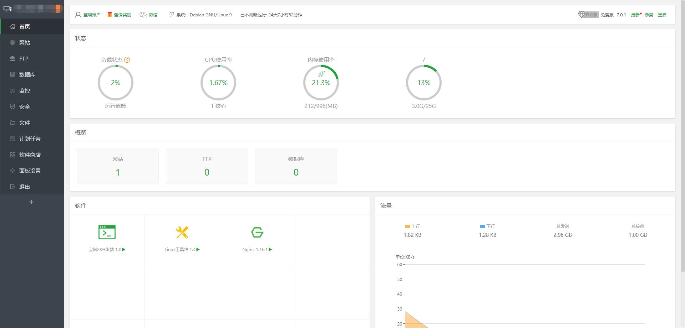
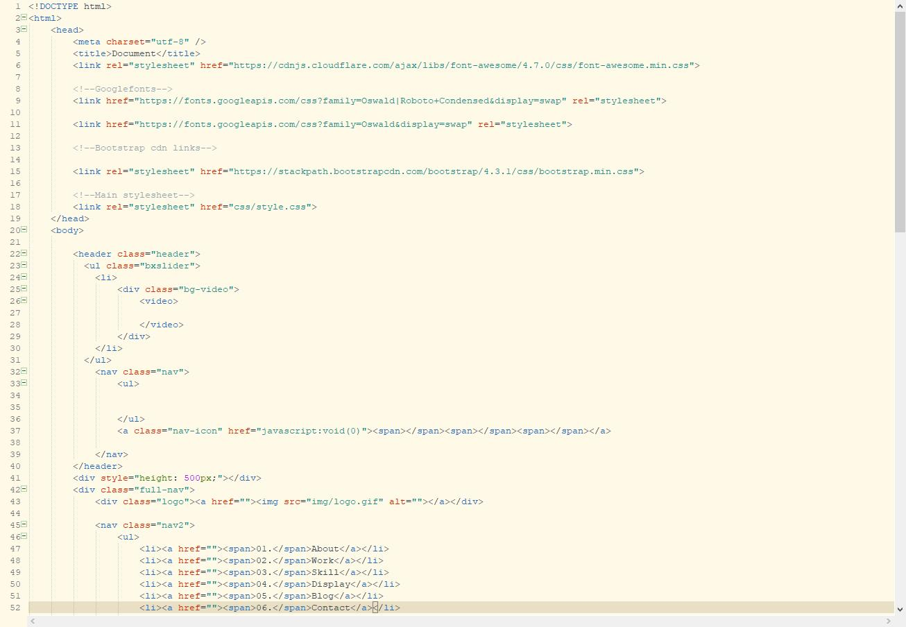
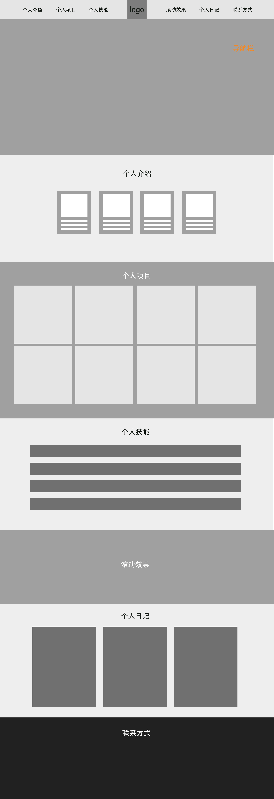
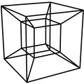
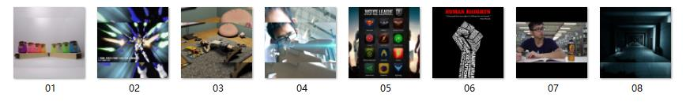
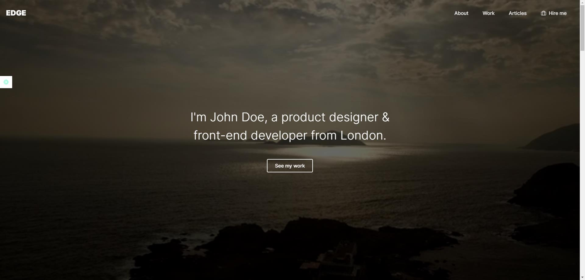

后续更新持续中......
将网页上传至服务器，并申请域名，配置宝塔面板。
开始进行代码编写。
对网页的样式及布局做出大致的排版，并确立网页白色简洁为主的样式风格。
主要色：#ffcc00
对此使用了旋转动态的Tesseract（超立方体）作为个人网页的LOGO，以显现该个人空间的独特。
对以往的个人作品进行整理，收集个人感觉合适的CSS及JS样式进行参考。
CSS样式引用：jquery.bxslider、magnific-popup、bootstrap
JS代码引用：jquery（动效代码库）、jquery.bxslider（滑块效果）、jquery.magnific-popup（弹窗效果）、bootstrap（架构搭建）
立项的第一天。参考了许多优秀的个人网页设计，对HTML5、CSS样式及JavaScript代码的应用有了一个初步的认识。
